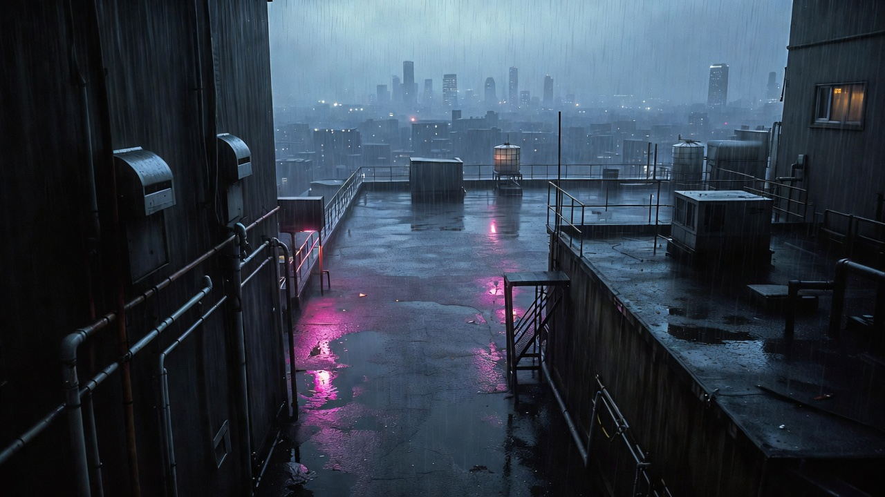

Dynamic Camera Angles and Fast Paced Motion
Naomi vs the Machine. Testing cinematic camera language, action sequencing, and what happens when you push AI video generation to its limits.
Updated June 2026

Environment concept — rooftop location, generated in Grok
Naomi vs the Machine started as a question. Could AI video tools be used more like a filmmaking environment than a simple image generator?
The goal was to treat AI video as a directorial process, focusing on shot composition, pacing and dynamic camera movement rather than producing isolated clips. This meant thinking about low angles to make the robot feel menacing, tracking shots to create momentum, and rapid cuts to build action energy.
The scenario was deliberately cinematic. A superhuman fighter facing off against a robot on a rain-soaked rooftop at night. High contrast, dynamic action, two very different characters sharing the same hostile environment.
Everything including character reference sheets, environment concepts, and all video generation was produced in Grok. At the time, Grok supported uploading a single image reference but not multiple. This meant maintaining character and environment consistency required a combination of one anchoring image and detailed manual text prompting for everything else. To extend sequences and create continuity between clips, I relied heavily on start and end frame techniques, using the final frame of one clip as the opening reference for the next. In theory this should have preserved visual continuity. In practice it introduced its own consistency issues, with subtle character drift, lighting shifts and proportion changes creeping in between clips.
Rooftop environment — Grok
Robot character reference — Grok
Naomi and robot — scene test
Final sequence
- ● Maintaining character consistency across multiple generated shots without image reference tagging, relying solely on text prompts
- ● Building a camera angle vocabulary for AI generation: low angles to create threat, tracking shots to build momentum, rapid cuts for pace
- ● How Grok handles action sequences with two distinct characters sharing the same environment
- ● Whether dynamic camera language could survive the generation process or whether the model would default to static mid-shots
- ● Environment consistency across multiple clips with changing lighting conditions and rain effects
- ● How well Grok handles darker skin tones and afro-textured hair under high-contrast action scene conditions
The camera angle library
One of the earliest decisions was to build a structured camera angle library before generating a single video clip. Rather than describing camera movement ad hoc in each prompt, I documented camera moves with specific prompt language for each one.
The logic was the same as building a character reference sheet. If you have a controlled vocabulary for camera direction, you can apply it consistently across generations rather than hoping the model interprets vague language the same way twice.
A few of the moves that worked particularly well for this project:
Tilt up — low angle
"A cinematic slow tilt-up shot from boots to the face of a figure standing in rain, shot from below to emphasise physical dominance and threat."
Fast dolly in
"FAST DOLLY IN / RUSH — the camera surges forward toward the subject's face, compressing space to trigger immediate urgency."
Whip pan
"WHIP PAN LEFT with aggressive lateral snap and heavy motion blur, masking a rapid transition between focal points."
Dutch angle
"DUTCH ANGLE with a fixed Z-axis roll, tilting the frame so the horizon cuts diagonally — used to signal instability and threat."
These camera direction prompts were adapted from a reference library I use across projects. The examples above show how specific technical language for camera movement produces more consistent results than descriptive language.
Process
This experiment went through easily over 100 generations. Grok was free and nearly unlimited at the time, which made it genuinely viable as a testing environment. That volume of iteration would not have been sustainable on a paid tier.
The process was built around three parallel challenges: keeping the environment consistent, keeping the characters consistent, and generating camera movement that actually worked.
Environment consistency was the first problem. A rain-soaked rooftop with neon reflections sounds simple but every generation wanted to reinterpret it. Puddle placement, skyline density, rain intensity, the colour of the ambient lighting — all of it drifted without constant reinforcement. The environment master image became an anchor that got described in explicit detail in every prompt.
Character consistency without image tagging was harder. Naomi's afro, skin tone, black suit and combat stance had to be re-established in text every single time. The robot's metallic finish, red eye detail and proportions required the same. When either character drifted, and they did regularly, the continuity between clips broke down completely.
The camera direction library solved the third problem. Using precise documented language for each camera move produced far more consistent results than writing fresh descriptions each time. FAST DOLLY IN / RUSH as a camera instruction produced reliably different results to "camera moves quickly toward face."
Sound design was handled in ElevenLabs. Rather than selecting a generic music track, I described the key moments in the sequence directly — the tension before the fight starts, the impact of the first hit, the rain-soaked atmosphere throughout. ElevenLabs generated music and sound effects that responded to those specific narrative beats rather than just sitting underneath the visuals. That approach to sound, briefing it like a composer rather than browsing a library, produced a result that felt like it belonged to this specific sequence rather than a generic action track.
What went wrong
The original concept included Naomi fighting with a sword. It got dropped.
Grok consistently struggled to maintain sword consistency across frames. The blade would change shape mid-clip, pass through surfaces, detach from hands, or simply vanish. After multiple attempts at workarounds, I dropped the sword from the concept entirely. The fight became hand-to-hand, which the model handled significantly better.
Three specific failure categories showed up repeatedly:
Failed sword test
The blade changes shape, loses solidity and detaches from the character entirely.
Hallucinating limbs
Extra limbs appear, joints bend incorrectly, body loses structural consistency under fast movement.
Repetitive action loop
The model defaults to a repetitive punch cycle rather than generating a dynamic exchange.
These failure modes were not frustrating in isolation. They were useful. Each one clarified a constraint that shaped the approach for the successful clips. The sword became a fist. The hallucinating limbs prompted a focus on wider shots where body physics mattered less. The repetitive loop was solved by generating shorter clips and cutting between them in edit rather than relying on a single long generation.
Key learnings
Structured camera language consistently outperforms descriptive language. FAST DOLLY IN / RUSH produces reliably different results to "camera moves quickly toward face"
Environment anchoring requires the same systematic approach as character anchoring. A master environment description treated as a fixed block in every prompt reduces drift significantly
Props requiring physical interaction with characters are a current hard limit. Grok cannot reliably maintain object physics and character consistency simultaneously
Failure clips are as valuable as successful ones. Documenting what breaks tells you more about a tool's actual constraints than any feature list
Volume of iteration matters. Over 100 generations for a short sequence is not unusual. Building workflows that make iteration fast and cheap is as important as building good prompts
Grok handles action better in wider shots. Close-up fast limb movement triggers more physics errors than mid or wide framing
Outcome
A short action sequence demonstrating that AI video tools can support dynamic camera language and fast-paced action when you approach it systematically. The camera direction library that came out of this experiment became a permanent part of my production workflow.
The sword getting dropped was the right call. The best version of this experiment was not the one originally planned. It was the one the constraints allowed.